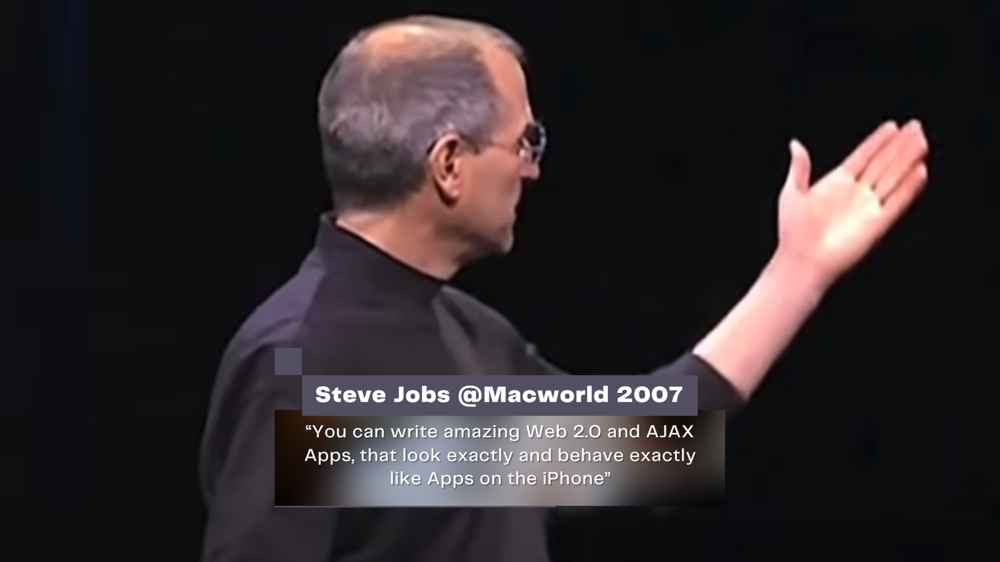

7. November 2023
Warum MOBIKO eine PWA und keine native App hat

Die Herausforderung von "Native Apps"
Als ich vor etwa drei Jahren bei MOBIKO das Tech-Team übernommen habe, war unser SaaS-Produkt nach einem Schema aufgebaut, mit dem viele Start-Ups an den Markt gehen:
Ein React Web-Portal und eine React native App bildeten die Grundlage unseres Mobilitätsbudgets. Im Großen und Ganzen hat das auch sehr gut funktioniert und die „offensichtlichen“ Erwartungen der Kunden erfüllt. Trotzdem war ich, genauso wie die anderen Entwickler, häufig frustriert:
Jedes einzelne Update musste von Apple und Google für die Stores freigegeben werden, was bis zu 72 Stunden dauerte. Das bedeutete auch, dass
- jeder Fehler bis zu 72 Stunden brauchte, bis dass er behoben werden konnte
- jedes Feature so entwickelt werden musste, dass es auch mit der alten Version kompatibel war
- wir zig verschiedene Versionen draußen hatten, weil manche User nie die App aktualisiert haben
- wir mit einem Versionscheck, der bei alter Version dazu aufgefordert hat, doch bitte zu Aktualisieren "gekontert" haben, den die User nicht sahen, weil sie kein Update eingespielt haben
...und am liebsten einfach gar keine Updates von den Devs ausgeliefert wurden. Die native App war vom Entwickler-Standpunkt ein Kartenhaus, was jeden Moment zusammenfallen konnte und das man am liebsten nicht anfassen mochte. Und wenn es unumgänglich war, dann nur mit höchster Vorsicht: So minimal-Invasiv wie möglich und mit maximaler Transpiration. Für ein Start-Up, das möglichst flexibel auf die Bedürfnisse des noch jungen Kundenstammes reagieren und viel vertesten musste, natürlich ein Unding.
Mit der Zeit kamen dann auch größere Kunden und Kunden im öffentlichen Bereich (oder daran angeschlossen) dazu, was zu neuen Herausforderungen führte:
Jetzt musste jedes Update nicht mehr nur für die Stores freigegeben werden, sondern aufgrund von Sicherheits- und Compliance-Richtlinien musste auch jede einzelne Version vorab (z.B. als Android-APK) an bestimmte Kunden verschickt werden, damit diese einen Rollout in ihrem Mobile Device Management (MDM)-System planen und ihrerseits testen konnten. Die Release-Zyklen der Applikation wurden immer länger, sodass wir irgendwann nur noch maximal einmal im Monat, oft nicht einmal dann releasen konnten. Das wiederum bedeutete mangelnde Innovation und unzufriedene Kunden.
Kann eine "Progressive Web App" die Lösung sein?
Während dieser Zeit recherchierte ich in verschiedenen Bereichen und fand heraus, dass auch andere Firmen die gleichen Herausforderungen hatten. Die Richtlinien der App-Stores erlaubten es (übrigens bis heute) nicht, dass Apps nur „Platzhalter“ sind, die zum Beispiel eine Webseite anzeigen, weil der Content der über die Web-App kommt nicht validierbar ist. Trotzdem gab und gibt es eine Alternative: Progressive Web Apps.
Progressive Web Apps, kurz „PWA“s sind Web-Applikationen, die sich auf dem Handy „installieren“, bzw. zum Startbildschirm hinzufügen lassen. Dabei werden die Seiten und Skripte auf dem Handy gecached und es wird ermöglicht, durch einen sogenannten „Service Worker“ Offline-Aktionen, unter Android Push-Benachrichtigungen und Share-Aktionen durchzuführen.
Steve Jobs hat die Idee von Apps, „that look exactly and behave exactly like native apps” (die genauso aussehen und sich genauso verhalten wie native Apps) bereits 2007 mit dem iPhone angekündigt. Absurderweise war es dann Google, die diese Technologie später unter dem Namen „Progressive Web App“ in für die breite Masse verfügbar gemacht hat.
Bis heute ist die Umsetzung der nativen Fähigkeiten unter iOS leider noch in den Kinderschuhen. Außerdem ist es für Apple-Nutzer nicht möglich, die PWA über den Appstore anzubieten und Apple unterstützt keine "Shared Target API", was eine direkte Übertragung von PDFs und Bildern von einer App in eine PWA unmöglich macht.
Während die Bedienung und die Usability der PWA also genauso sein würde, wie bei der nativen App, musste ich zuerst Business und Business dann die Kunden und Interessenten davon überzeugen, dass die PWA am Ende viele Vorteile haben würde, die diese „Nachteile“, vor allem den der ungewöhnlichen "Installation" ausgleichen würde.
Einführung der PWA
Eine Wette, die glücklicherweise erfolgreich war: Auch wenn es ungewohnt ist, sind die Mitarbeitenden der B2B-Kunden von MOBIKO durchaus bereit, eine PWA manuell über eine Webseite zu installieren. Der Vorteil für das MDM-System, nur noch den „Link“ zum Startbildschirm hinzuzufügen und danach keine Probleme mehr mit der (in der Browser-Sandbox ausgeführten und daher potenziell sicheren) App liegt auf der Hand und MOBIKO ist nun in der Lage, bei Bedarf mehrmals täglich Updates an die User zu verteilen. Zudem ist die Progressive Web App deutlich schneller und Ressourceneffizienter als die native App, die vorher angeboten wurde.
Themen wie Biometrie, Zugriff auf Sensoren und so weiter sind abhängig von Android, iOS, Tablet oder Mobiltelefon für eine Weiterentwicklung verfügbar, allerdings fehlen für Apple-Geräte noch Funktionalitäten, wie Push-Benachrichtigungen (teilweise implementiert), Web Target API oder die Möglichkeit, PWAs über den App-Store anzubieten.
Bei der Abwägung von PWA vs. nativer App würde ich daher immer auf den einzelnen Use-Case schauen. Progressive Web Apps bieten sich meiner Meinung nach immer dann an, wenn man im B2B-Umfeld unterwegs ist und daher die App-Store Werbung nicht benötigt und die nativen Fähigkeiten entweder ausreichend sind, oder man den Deal „Features vs. Maintainability“ eingehen kann.